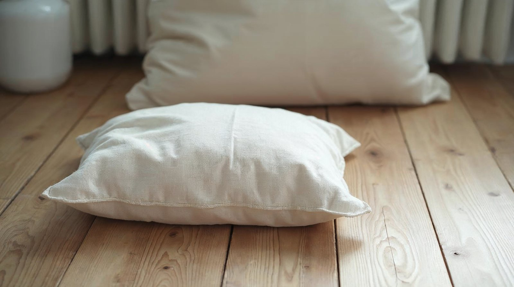
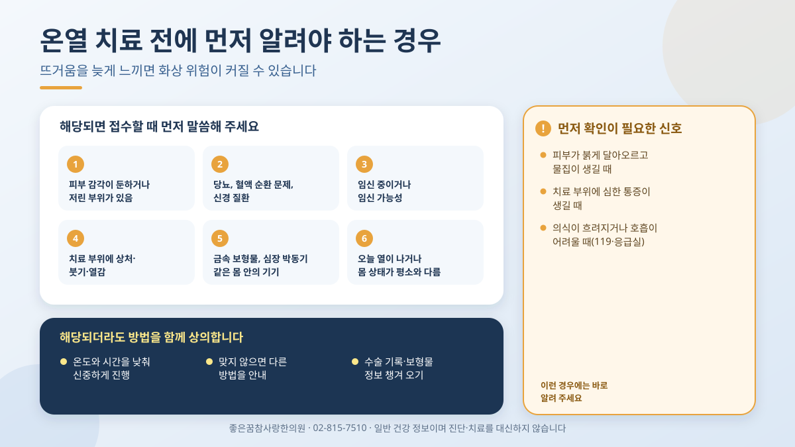

이종호 한의사 감수좋은꿈참사랑한의원 대표원장 (한의사 면허번호 19769)발행 2026-11-23 · 수정 2026-11-26
이 글의 차례
- 왜 미리 알려야 하나요
- 왜 몸 안의 금속까지 여쭙나요
- 이런 경우도 알려 주시면 좋습니다
- 어르신과 감각이 둔해진 분은 왜 더 살피나요?
- 갓 다친 부위에는 왜 열을 바로 더하지 않나요?
- 언제, 어떻게 말씀하시면 되나요?
- 해당되면 온열 치료를 못 받나요?
- 자주 하는 오해
- 예를 들면 이런 경우입니다
- 임신 중이거나 준비 중인 분은 어떻게 하나요?
- 몸에 열이 나는 날은 왜 미루기도 하나요?
- 먼저 이렇게 여쭙니다
- 일상에서 먼저 해 볼 수 있는 것
- 한의원에서 함께 살필 수 있는 경우
- 집에서 찜질할 때도 같은 점을 살펴 주세요
- 약을 드시는 분은 무엇을 알려 주시면 될까요?
- 피부가 약한 분은 어떻게 조정하나요?
- 처음 오신 날과 다시 오신 날
- 스스로 점검해 보세요
- 아이가 온열 치료를 받을 때는요?
- 왜 해당 항목을 매번 확인하나요
- 이렇게 기록해 오시면 상담이 쉬워집니다
- 이런 증상은 먼저 확인이 필요합니다
- 미리 알려 주시면 무엇이 달라지나요?
- 관련 글
피부 감각이 둔하거나 당뇨, 혈액 순환 문제, 신경 질환이 있는 분, 임신 중인 분, 피부가 약한 분, 치료 부위에 상처나 붓기, 열감이 있는 분은 온열 치료 전에 미리 알려 주세요. 해당되더라도 방법을 조정해 진행할 수 있는지 함께 판단하며, 다른 방법을 권하기도 합니다. 해당되는지 애매하면 일단 말씀해 주세요.
왜 미리 알려야 하나요
- 열을 느끼는 감각이 둔하면 뜨거움을 늦게 알아차려 화상 위험이 커질 수 있습니다.
- 염증이나 열감이 있는 부위는 열이 더해지면 불편이 커질 수 있습니다.
- 임신 중에는 치료 부위와 방법을 더 신중하게 정해야 합니다.
- 금속 보형물이나 심장 박동기처럼 몸 안의 기기가 있으면 장비 종류에 따라 사용 여부를 따로 확인해야 합니다.
왜 몸 안의 금속까지 여쭙나요
온열 장비 가운데 극초단파처럼 몸속 깊이 열을 전달하는 방식은 금속이 있는 자리에서 열이 몰릴 수 있다고 알려져 있습니다. 겉으로는 보이지 않는 인공관절, 뼈를 고정한 나사나 판, 치과 임플란트 위치까지 여쭙는 이유입니다.
심장 박동기처럼 전기로 작동하는 기기는 장비 종류에 따라 영향을 받을 수 있어 더 신중하게 확인합니다. 수술한 지 오래되어 잊고 계셨더라도, 기억나는 대로 "몇 년 전 어디를 수술했다" 정도만 알려 주시면 됩니다.
이런 경우도 알려 주시면 좋습니다
앞에서 말씀드린 항목 말고도, 본인은 별일 아니라고 생각하기 쉬운 상황들이 있습니다. 아래에 해당하면 치료 전에 한마디 해 주세요.
- 치료 부위에 습진이나 피부염이 있거나, 최근 피부가 벗겨지거나 가려운 곳이 있다
- 큰 흉터나 화상 자국이 치료 부위 근처에 있다
- 오늘 잠이 오는 약이나 진통제를 먹고 왔다
- 전날 술을 많이 마셨거나 잠을 거의 못 잤다
- 최근 치료 부위에 주사나 시술을 받았다
- 평소 땀이 거의 나지 않거나, 반대로 아주 많이 나는 편이다
이런 상황에서는 열을 느끼는 감각이나 피부의 반응이 평소와 다를 수 있어, 온도를 낮추거나 시간을 줄이고 확인을 더 자주 합니다.
어르신과 감각이 둔해진 분은 왜 더 살피나요?
나이가 들면 피부가 얇아지고, 열을 느끼는 감각도 조금씩 무뎌지는 경우가 많습니다. 본인은 따뜻하다고만 느끼는데 피부는 이미 붉어지고 있을 수 있습니다.
그래서 어르신께는 "뜨거우세요?"만 여쭙지 않고, 치료 중간에 피부를 직접 보며 확인합니다. 보호자가 함께 오셨다면 평소 찜질하다 데인 적이 있는지 같이 여쭙기도 합니다.
갓 다친 부위에는 왜 열을 바로 더하지 않나요?
다친 지 얼마 되지 않아 붓고 화끈거리는 부위는 이미 열이 올라 있는 상태일 수 있습니다. 여기에 열을 더하면 붓기와 불편이 커질 수 있어, 붓기와 열감부터 확인합니다.
다친 날짜와 다친 상황을 알려 주시면, 지금 온열을 더해도 될 시기인지, 침이나 다른 방법을 먼저 쓸지 함께 정합니다.
언제, 어떻게 말씀하시면 되나요?
접수할 때 기본 정보를 적으시면서 함께 적어 주셔도 되고, 진료실에서 원장에게 직접 말씀하셔도 됩니다. 물리치료실로 이동한 뒤 생각났다면 치료 시작 전에 직원에게 말씀해 주세요. 그 자리에서 다시 확인합니다.
해당하는지 헷갈리는 항목이 있다면 고민하지 말고 일단 말씀해 주세요. 괜찮은지 아닌지는 제가 판단하겠습니다. 미리 알려 주신 정보는 다음 진료 때도 기록을 보며 이어서 살핍니다.
해당되면 온열 치료를 못 받나요?
대부분은 그렇지 않습니다. 해당하는 항목이 있으면 부위를 바꾸거나, 온도와 시간을 낮추거나, 확인 간격을 줄이는 식으로 조정해 진행할 수 있는지 먼저 살핍니다. 맞지 않다고 판단되면 침이나 추나처럼 열을 쓰지 않는 방법을 안내합니다.
자주 하는 오해
- 따뜻하면 누구에게나 편하다고 여기기 쉽지만, 감각이 둔한 부위나 갓 다친 부위는 열이 부담이 될 수 있습니다.
- 뜨거울수록 잘 듣는다고 생각하기 쉽지만, 온도는 편안하게 느끼는 범위에서 정하고 뜨겁다고 느끼면 바로 말씀해 주셔야 합니다.
- 오래전 수술이라 말하지 않아도 된다고 여기기 쉽지만, 몸 안에 남은 금속 보형물은 장비에 따라 확인이 필요해 알려 주시는 것이 좋습니다.
- 당뇨가 있으면 온열 치료를 아예 못 받는다고 생각하기 쉽지만, 상태를 보고 온도와 시간을 낮춰 신중하게 진행할지 함께 정합니다.
예를 들면 이런 경우입니다
- 예를 들어 당뇨로 발끝이 저린 어르신이라면, 저린 부위를 먼저 확인하고 그 부위는 피하거나 온도와 시간을 낮춰 치료 중에도 자주 상태를 여쭙니다.
- 예를 들어 임신을 준비 중인 분이라면, 마지막 생리 시작일을 먼저 여쭙고 임신 가능성을 고려해 치료 부위와 방법을 정합니다.
- 예를 들어 운동하다 발목을 접질려 이틀째 붓고 화끈거리는 직장인이라면, 그 부위에 바로 열을 더하기보다 붓기와 열감부터 확인하고 다른 방법을 함께 검토합니다.
임신 중이거나 준비 중인 분은 어떻게 하나요?
임신 중에는 배와 허리 아래쪽처럼 열을 더할 때 더 신중해야 하는 부위가 있습니다. 그래서 임신 사실이나 가능성을 먼저 알려 주시면, 치료 부위를 바꾸거나 온열을 쉬고 다른 방법을 고르는 쪽으로 함께 정합니다.
임신을 준비 중이거나 생리가 늦어진 경우에도 말씀해 주세요. 임신 중이시라면 다니시는 산부인과와도 상의해 주시고, 그 이야기도 함께 들려주시면 치료 계획에 반영합니다.
몸에 열이 나는 날은 왜 미루기도 하나요?
감기 기운이나 몸살로 열이 나는 날에는 몸이 이미 더운 상태라, 온열을 더하면 오히려 더 지치고 어지러울 수 있습니다. 염증으로 화끈거리는 부위도 마찬가지입니다.
이런 날에는 온열 치료를 쉬고 다른 치료만 하거나, 진료 자체를 다른 날로 옮기기도 합니다. 오시기 전에 열이 난다면 미리 전화로 알려 주시면 일정을 함께 조정합니다.
먼저 이렇게 여쭙니다
- 피부 감각이 둔하거나 저림이 있는 부위가 있나요?
- 당뇨, 혈액 순환 문제, 신경 질환이 있나요?
- 임신 중이거나 임신 가능성이 있나요?
- 몸 안에 금속 보형물이나 심장 박동기 같은 의료기기가 있나요?
- 오늘 열이 나거나 몸 상태가 평소와 크게 다른가요?
일상에서 먼저 해 볼 수 있는 것
- 해당되는 항목을 접수할 때 먼저 말하기
- 수술 기록이나 보형물 정보가 있다면 챙겨 오기
- 집에서 찜질할 때도 감각이 둔한 부위는 피하거나 시간을 짧게 하기
- 치료 당일 열이 나면 미리 연락해 일정 조정하기
한의원에서 함께 살필 수 있는 경우
- 해당되는 항목이 있어도 방법을 조정해 진행할 수 있는지 함께 상의합니다.
- 온열 대신 다른 방식으로 편안함을 주는 방법이 있는지 함께 이야기합니다.
- 치료 뒤 피부 상태를 어떻게 확인할지 함께 정합니다.
좋은꿈참사랑한의원에서는 IS400 극초단파 치료기 같은 온열 장비를 쓰기 전에 이 항목들을 먼저 확인하고, 필요하다고 판단될 때만 온도와 시간을 낮춰 신중하게 진행합니다. 맞지 않는 경우에는 침이나 다른 방법을 안내합니다.
첫 방문에는 진단받은 질환과 복용 중인 약, 수술 이력을 메모해 오시면 진료실에서 하나씩 확인합니다. 불편한 곳과 함께 잠, 소화, 배변, 몸의 온기를 여쭙고 진맥을 짚은 뒤, 필요하다고 판단되면 손으로 살피는 진찰이나 초음파로 상태를 확인합니다.
온열 치료를 하게 되면 시작 전에 치료 부위의 피부를 살피고, 치료 중에도 뜨겁거나 따가우면 바로 말씀하시도록 안내하며, 끝난 뒤 피부 상태를 다시 확인합니다.

집에서 찜질할 때도 같은 점을 살펴 주세요
- 핫팩이나 전기장판을 같은 자리에 오래 대고 있으면, 뜨겁지 않게 느껴져도 피부가 붉어지거나 물집이 생길 수 있습니다.
- 감각이 둔한 부위, 당뇨로 저린 발은 찜질을 피하거나 짧게 하고, 끝난 뒤 피부 색을 직접 확인해 주세요.
- 잠든 채로 찜질기를 켜 두지 않도록 시간을 정해 두시면 좋습니다.
- 갓 다쳐 붓고 화끈거리는 부위는 집에서도 열을 바로 더하기보다 먼저 상태를 확인받아 보세요.
약을 드시는 분은 무엇을 알려 주시면 될까요?
어떤 약은 땀이 나는 정도나 피부의 예민함, 졸린 정도에 영향을 줄 수 있습니다. 진통제, 수면을 돕는 약, 혈압약, 피부에 바르는 스테로이드 연고 등을 쓰고 계시다면 이름을 알려 주세요.
약을 바꾸거나 끊으실 필요는 없습니다. 드시는 약에 맞춰 온도와 시간, 확인 간격을 조정하는 것이 제 일입니다. 약 봉투 사진 한 장이면 충분합니다.
피부가 약한 분은 어떻게 조정하나요?
피부가 얇고 쉽게 붉어지는 분, 아토피나 건선처럼 피부 질환이 있는 분은 열에 더 예민하게 반응할 수 있습니다. 이런 경우 낮은 세기에서 짧게 시작하고, 피부 질환이 있는 자리는 피해서 치료합니다.
치료 부위에 문신이나 피부 시술을 받은 자리가 있다면 그것도 알려 주세요. 그 부위의 피부 상태를 먼저 확인한 뒤 진행 여부를 정합니다.
처음 오신 날과 다시 오신 날
처음 오신 날에는 이 글에 적은 항목을 하나씩 여쭤 기록해 둡니다. 다시 오신 날에는 그 기록을 바탕으로, 그사이 달라진 점만 확인합니다. 새로 생긴 질환이나 약, 다친 곳이 있다면 진료실에 들어오시며 먼저 말씀해 주세요.
같은 항목이라도 상태가 바뀌면 판단이 달라질 수 있습니다. 예를 들어 지난번엔 괜찮던 부위가 이번에 다쳐 붓기가 있다면, 그날은 그 부위의 온열을 쉬고 다른 방법을 고릅니다.
스스로 점검해 보세요
- 손끝이나 발끝이 저리거나 감각이 무딘 곳이 있다
- 당뇨나 혈액 순환 문제로 진료를 받고 있다
- 임신 중이거나 임신 가능성이 있다
- 인공관절, 금속 고정물, 심장 박동기 같은 기기가 몸 안에 있다
- 최근 며칠 사이 다쳐서 붓거나 화끈거리는 부위가 있다
- 오늘 열이 나거나 감기 기운이 있다
- 예전에 찜질팩이나 전기장판에 데인 적이 있다
하나라도 해당하면 치료 전에 말씀해 주세요. 치료 뒤 피부가 붉어진 정도는 보통 몇 시간 안에 가라앉는지 지켜보시고, 하루가 지나도 붉거나 따갑거나 물집이 보이면 02-815-7510으로 바로 연락해 주세요.
아이가 온열 치료를 받을 때는요?
아이는 뜨거워도 표현을 잘 못 하거나, 참는 것이 착한 일이라고 생각해 말을 안 하는 경우가 있습니다. 그래서 아이에게는 어른보다 낮은 세기와 짧은 시간으로 시작하고, 보호자께서 옆에서 피부를 함께 봐 주시도록 부탁드립니다.
아이가 몸을 자주 움직이면 장비와의 거리가 바뀌어 열이 한곳에 몰릴 수 있습니다. 가만히 있기 어려워하는 날이라면 그날은 온열을 쉬고 다른 방법을 고르기도 합니다.
왜 해당 항목을 매번 확인하나요
한 번 확인한 항목이라도 몸 상태는 계속 바뀝니다. 새로 진단받은 질환이 생기거나, 약이 바뀌거나, 수술을 받으면 온열을 해도 되는지 판단이 달라질 수 있습니다. 그래서 다시 오실 때마다 "그사이 달라진 것은 없으세요?" 하고 짧게 여쭙습니다.
이렇게 기록해 오시면 상담이 쉬워집니다
- 진단받은 질환과 복용 중인 약
- 감각이 둔하거나 저린 부위
- 몸 안의 의료기기나 보형물 정보
- 마지막 생리 시작일(해당되는 경우)
- 예전에 찜질이나 온열 치료 뒤 피부가 붉어지거나 물집이 생긴 경험
- 평소 손발이 찬지, 더위를 많이 타는지 같은 몸의 온기
알려 주신 항목은 진료 기록에 남겨 두고, 원장과 물리치료를 돕는 직원이 함께 확인합니다. 같은 이야기를 여러 번 하지 않으셔도 되도록 기록을 이어서 봅니다.
이런 증상은 먼저 확인이 필요합니다
- 물집이 넓게 생기거나 피부가 벗겨질 만큼 데인 경우
- 치료 중이나 뒤에 의식이 흐려지거나 숨쉬기 어려운 경우
이런 신호가 있으면 한의원보다 가까운 병원이나 응급실을 먼저 찾으세요.
미리 알려 주시면 무엇이 달라지나요?
같은 온열 치료라도 미리 알려 주신 정보가 있으면 시작 세기, 치료 시간, 확인 간격, 피해야 할 부위를 처음부터 맞춰 정할 수 있습니다. 치료를 시작한 뒤에 알게 되면 중간에 멈추고 다시 맞춰야 해서, 쉬다 가시는 시간이 짧아질 수 있습니다.
작은 정보 하나가 치료를 편하고 안전하게 만듭니다. 알려 주실지 망설여지는 내용이 있다면, 일단 말씀해 주시는 쪽을 골라 주세요.
관련 글

여쭙는 것
- 피부 감각이 둔하거나 저림이 있는 부위가 있나요?
- 당뇨, 혈액 순환 문제, 신경 질환이 있나요?
- 임신 중이거나 임신 가능성이 있나요?
생활에서 해 볼 것
- 해당되는 항목을 접수할 때 먼저 말하기
- 수술 기록이나 보형물 정보가 있다면 챙겨 오기
- 집에서 찜질할 때도 감각이 둔한 부위는 피하거나 시간을 짧게 하기
한의원에서 함께 살필 것
- 해당되는 항목이 있어도 방법을 조정해 진행할 수 있는지 함께 상의합니다.
- 온열 대신 다른 방식으로 편안함을 주는 방법이 있는지 함께 이야기합니다.
- 치료 뒤 피부 상태를 어떻게 확인할지 함께 정합니다.
먼저 확인이 필요한 신호
- 물집이 넓게 생기거나 피부가 벗겨질 만큼 데인 경우
- 치료 중이나 뒤에 의식이 흐려지거나 숨쉬기 어려운 경우
한눈에 보는 표
| 구분 | 핵심 |
|---|---|
| 여쭙는 것 | 피부 감각이 둔하거나 저림이 있는 부위가 있나요? 당뇨, 혈액 순환 문제, 신경 질환이 있나요? |
| 생활에서 해 볼 것 | 해당되는 항목을 접수할 때 먼저 말하기 수술 기록이나 보형물 정보가 있다면 챙겨 오기 |
| 한의원에서 함께 살필 것 | 해당되는 항목이 있어도 방법을 조정해 진행할 수 있는지 함께 상의합니다. 온열 대신 다른 방식으로 편안함을 주는 방법이 있는지 함께 이야기합니다. |
| 먼저 확인이 필요한 신호 | 물집이 넓게 생기거나 피부가 벗겨질 만큼 데인 경우 치료 중이나 뒤에 의식이 흐려지거나 숨쉬기 어려운 경우 |
자주 묻는 질문
당뇨가 있으면 온열 치료를 받을 수 없나요?
받을 수 있는지는 상태에 따라 달라 상담 후 정하며, 온도를 낮추거나 시간을 줄여 신중하게 진행합니다.
임신 중에는 어떻게 하나요?
미리 알려 주시면 치료 부위와 방법을 신중하게 판단합니다.
알려야 할지 모르는 증상이 있으면요?
애매하면 일단 말씀해 주세요. 필요한지 함께 판단하겠습니다.
좋은꿈참사랑한의원은 재진 때 지난번 이야기부터 이어서 여쭙니다. 진료시간과 예약은 오시는 길에서 확인하세요.
어디서 상담받을 수 있나요?
좋은꿈참사랑한의원은 서울 동작구 만양로2길 2 신성빌딩 3층·5층(서울 동작구 상도동, 7호선 상도역 3번 출구 근처)에 있습니다. 한의사 3명(이종호 대표원장, 조영기 수석진료원장, 정원영 진료원장)이 진료합니다. 진료시간은 평일 09:30~20:00(점심 13:00~14:00), 토·일·공휴일 09:30~15:00이며, 방문 전 전화로 확인을 권합니다. 예약은 네이버 예약, 카카오톡 상담, 전화 02-815-7510로 받습니다.
이 글은 일반적인 건강 정보이며 개인의 진단이나 치료를 대신하지 않습니다. 증상이 있거나 복용 중인 약이 있다면 진료를 통해 확인하세요. 치료 효과는 개인마다 다를 수 있습니다.
작성 기준: 일반적으로 알려져 있는 건강 정보를 참고해 정리했습니다(대표원장 감수). 증상 기록은 1~2주 동안 하루 1회, 비슷한 시간에 적어 오시면 지난 상태와 비교하기 쉽습니다.